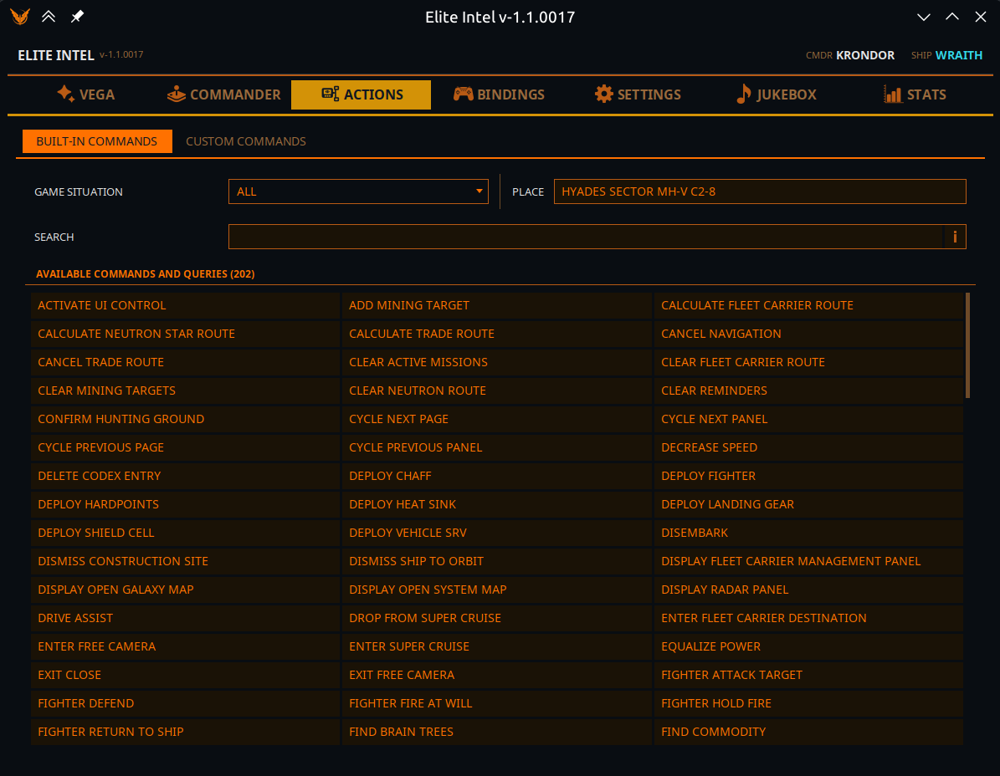
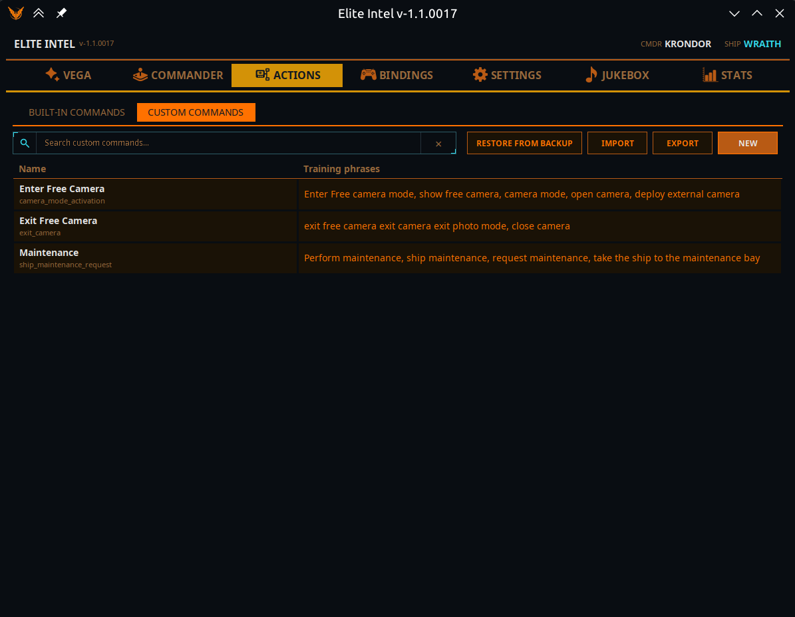
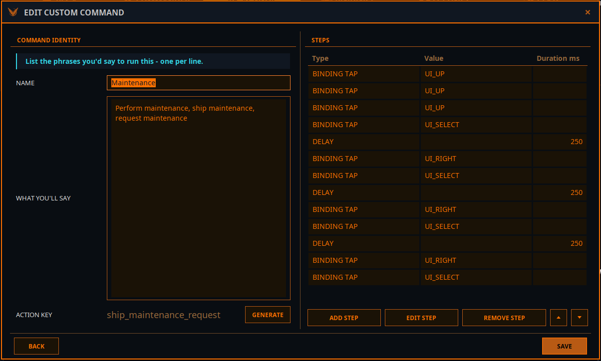

Вкладка «Дії»
 Усе, що вміє Elite Intel,
і все, чого ви його навчили. Дві підвкладки: Вбудовані команди та Власні команди.
Усе, що вміє Elite Intel,
і все, чого ви його навчили. Дві підвкладки: Вбудовані команди та Власні команди.
Вбудовані команди

Це відповідь на запитання «що я можу сказати просто зараз?» — а не лише «що вміє ця версія?»
Вибір області
Список угорі ліворуч містить УСІ, а також кожну фізичну ситуацію, у якій ви можете опинитися: у кораблі, в SRV, у винищувачі, у таксі; пішки (станція, ангар, соціальна зона, планета); пристиковано, приземлено, планування, суперкруїз, біля кільця, на орбіті, у глибокому космосі.
- Він слідує за грою — вийдіть із корабля, і список сам перемкнеться на Пішки, а перелік нижче зміниться разом із ним.
- Щойно ви вибираєте область вручну, він перестає слідувати й лишається там, де ви його поставили.
- УСІ показує всі дії цієї версії, зокрема недоступні там, де ви зараз. Конкретна ситуація показує лише те, що там доступно.
- Якщо гру не запущено, вибрано УСІ.
Поруч поле лише для читання Місце показує конкретне розташування, про яке повідомляє гра, — станцію, тіло чи систему.
Пошук
Простий буквальний текстовий фільтр за переліченими діями: їхніми назвами, ключами дій і вимовленими фразами, що їх запускають. Шукається рівно те, що ви ввели.
Це навмисно не маршрутизація «Веги». «Вега» зіставляє за змістом, тож введене там «знайди» видало б команди без жодного спільного слова — і зрозуміти чому було б неможливо. Щоб читати список, потрібен буквальний пошук.
Доступні команди й запити
Єдиний список за абеткою в трьох стовпцях: вбудовані дії, ваші макроси й запити для вибраної області. Поки вкладка відкрита, він оновлюється наживо за ігровими подіями — включно з власною командою, створеною тим часом.
Натисніть будь-який пункт (або виділіть і натисніть Enter), щоб відкрити подробиці.
Подробиці команди
| Поле | Значення |
|---|---|
| Назва команди | Зрозуміла людині назва |
| Ключ дії | Внутрішній ідентифікатор — під цим ім'ям її бачить мовна модель |
| Тип команди | Вбудована прив'язка (натискає клавішу) · Вбудована дія (робить щось у застосунку) · Вбудований запит (відповідає на запитання) · Власна команда (ваша) |
| Опис | Що вона робить |
| Навчальні фрази | Вимовлені фрази, що ведуть до неї, вашою поточною мовою |
Кнопки:
- Запустити — виконати одразу із застосунку, без голосу. Якщо команда має параметри, спершу з'явиться невелика форма.
- Запропонувати виправлення — відкриває заповнений issue на GitHub з id команди, вашою мовою, поточними фразами й вашими варіантами, щоб запропонувати кращі формулювання для вашої мови. Саме так покращуються неанглійські фрази; будь ласка, користуйтеся.
- Назад — закрити вікно.
Див. також: Усі команди й запити.
Власні команди

Покрокова інструкція: Власні команди.
Ваші власні макроси — іменована послідовність кроків, яку запускає те, що ви кажете (або набираєте в ігровому чаті). За духом схоже на VoiceAttack, але зіставлення йде за змістом, а не за точною фразою.
Таблиця показує Назву й Навчальні фрази кожної команди, над нею — поле пошуку. Натисніть рядок, щоб відкрити подробиці: там видно Послідовність кроків і кнопки Запустити, Змінити, Дублювати та Видалити.
Угорі:
| Кнопка | Що робить |
|---|---|
| Новий | Створити команду |
| Експорт | Вибрати команди й записати у файл, яким можна поділитися |
| Імпорт | Прочитати команди з файлу. Вікно імпорту позначає кожен запис як Готово, Конфлікт (такий ключ дії вже є й буде перезаписаний) або Недійсний. Імпорт замінює ваш поточний набір — спершу робиться резервна копія, а потім пропонується Відкрити папку резервних копій |
| Відновити з резервної копії | Повернути набір, замінений імпортом |
Дублювати відкриває редактор із назвою й кроками копії, але без фраз і без ключа дії — напишіть для неї нові фрази, щоб дві команди було легко розрізнити.
Якщо файл власних команд під час запуску виявиться пошкодженим, Elite Intel автоматично завантажить резервну копію й повідомить про це.
Редактор команди

Ідентифікація команди
| Поле | Примітки |
|---|---|
| Назва | Як ви її називаєте |
| Що ви скажете | Фрази, якими ви її запускатимете — по одній у рядку |
| Ключ дії | Внутрішній ідентифікатор. Натисніть Створити, і мовна модель напише його за вашими фразами. Це завжди англійський snake_case, хоч якою мовою фрази, бо він стає назвою інструмента, яку бачить модель, — тож вручну його ввести не можна. Перед створенням додайте хоча б одну фразу |
Кроки — послідовність за порядком. Додавайте, змінюйте, видаляйте й переміщуйте кроки вгору та вниз.
| Тип кроку | Поля | Для чого |
|---|---|---|
| Натискання прив'язки | Прив'язка | Один раз натиснути призначену дію |
| Утримання прив'язки | Прив'язка, Тривалість, мс | Утримувати призначену дію |
| Затримка | Тривалість, мс | Зачекати між кроками |
| Промовити | Текст | «Вега» щось скаже |
| Натискання клавіші | Довільна клавіша, Модифікатор, Тривалість, мс | Натиснути клавішу, яку в грі ні до чого не прив'язано |
| Ввести текст | Текст | Надрукувати текст у поле, що має фокус |
Ввести текст потрапляє туди, де фокус клавіатури. Відкрийте текстове поле попереднім кроком — наприклад Натискання клавіші: Enter, щоб відкрити чат зв'язку, — інакше текст піде в керування кораблем як натискання клавіш.
За можливості використовуйте кроки прив'язки, а не Натискання клавіші — прив'язки слідують за клавішами, які справді використовує гра, і переживають перепризначення.
Приклад: маршрут до місця, де ви часто буваєте
Вбудована навігація «Веги» прокладає маршрут лише до результату пошуку (торговець, ринок, мисливські угіддя…), до місць, які вона вже знає (дім, ваш флотоносець, місія), або до системи з буфера обміну. До системи, яку ви просто називаєте вголос, вона маршрут не прокладе — назви якраз те, на чому розпізнавання мовлення помиляється найчастіше. Для місця, куди ви літаєте регулярно, власна команда зробить це точно, щоразу:

Що ви скажете: маршрут до jameson memorial, відвези мене до jameson memorial, jameson memorial маршрут — потім Створити ключ дії.
| # | Крок | Значення | Тривалість, мс | Що робить |
|---|---|---|---|---|
| 1 | Натискання прив'язки | GALAXYMAPOPEN | Відкрити карту галактики | |
| 2 | Затримка | 1000 | Дати карті завантажитися | |
| 3 | Утримання прив'язки | CAMZOOMIN | 500 | Наблизити камеру карти |
| 4 | Натискання прив'язки | UI_LEFT | Перейти до поля пошуку | |
| 5 | Натискання прив'язки | UI_RIGHT | ||
| 6 | Натискання прив'язки | UI_SELECT | Відкрити поле пошуку | |
| 7 | Ввести текст | SHINRARTA DEZHRA | Надрукувати назву системи — без розпізнавання мовлення | |
| 8 | Натискання клавіші | ENTER | 50 | Шукати |
| 9 | Затримка | 500 | Дочекатися результату | |
| 10 | Натискання прив'язки | UI_RIGHT | Перейти в панель результату | |
| 11 | Утримання прив'язки | UI_UP | 500 | Піднятися до верхньої кнопки |
| 12 | Натискання прив'язки | UI_SELECT | Прокласти маршрут | |
| 13 | Затримка | 3000 | Дочекатися прокладання маршруту | |
| 14 | Натискання прив'язки | CAMYAWLEFT |
Щоб зробити свою, скопіюйте її кнопкою Дублювати, змініть назву, фрази й систему в кроці Ввести текст і створіть новий ключ.
Поради:
- Фрази можна розділяти комами, а не лише переходами рядка.
- Затримки залежать від вашого ПК. Якщо карта не готова до наступного кроку, збільште затримки — або посуньте Темп клавіатурного вводу на вкладці «Бінди» до «Повільно».
- Кожному кроку прив'язки потрібна клавіатурна прив'язка в грі. Якщо дію не призначено, вкладка «Бінди» покаже її у Відсутніх прив'язках.
- «Вега» відкриває й читає карту галактики так само для власних команд маршруту, тож надійний шаблон — команда, що починає зі щойно відкритої карти; не починайте з уже відкритої.
Як користуватися
Говоріть як звичайно. Не треба повторювати навчальну фразу слово в слово — треба передати той самий зміст. Що більше ваші фрази відрізняються від фраз інших команд, то надійніше буде вибрано вашу.
Під час запуску «Вега» повідомить, скільки власних команд завантажено і скільки не пройшли перевірку.
Community 👉Matrix👈